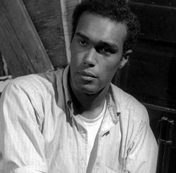
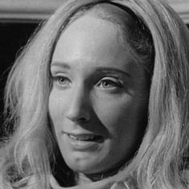
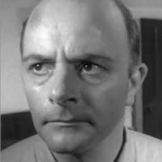
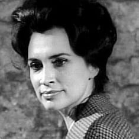

Night of the Living Dead
Duane Jones
Duane Jones was born in New York on the 2 February 1937. He studied at the University of Pittsburg in his early life and later studied to become an actor. He also taught English in some other Universities. His first major role was as 'Ben' in 'Night of the Living Dead', he was credited as being the African-American to play a leading role in a horror film without being directed to do so. He played some minor roles in other films, continued to teach english and also directed theatre productions. He died on 22 July 1988.
Judith O'Dea
Judith O'Dea (1945), is an american actress who starred in 'Night of the Living Dead as Barbara.' She also appeared in other movies such as 'The Pirate' (1978) and 'Claustrophobia' (2003). She now runs a Communications firm.
Karl Hardman
Karl Hardman (1927-2007), was an American actor who features in 'Night of the Living Dead' as Harry Cooper. This is one of his only roles, he was a radio producer during his lifetime. He also featured in the follow up movie to Night of the Living Dead. He died in 2007.
Marilyn Eastman
Marilyn Eastman (1933) was an American radio producer born in Pittsburg, she worked with Karl Hardman who also featured in this movie. This is one of her few acting roles where she plays 'Helen Cooper.'